Click here to go back to the ANTH333 media presentation: Media Presentation
library(tidyverse)pakistan <- read.csv("~/Documents/RicaRebusitWeb/Rainfall_1901_2016_PAK.csv")The data is from kaggle and the link to it is right here -> Click Me
Information of Data:
This data set has 3 variables:
Rainfall - (MM) - This is the recorded rainfall for the
year and month at the time. Rainfall is measured in millimeters
Year - The year of each recorded rainfall. Contains 116
years of recorded rainfall.
Month - The month of each recorded rainfall.
str(pakistan)## 'data.frame': 1392 obs. of 3 variables:
## $ Rainfall....MM.: num 40.4 12.3 25.5 14.3 38.3 ...
## $ Year : int 1901 1901 1901 1901 1901 1901 1901 1901 1901 1901 ...
## $ Month : chr "January" "February" "March" "April" ...summary(pakistan)## Rainfall....MM. Year Month
## Min. : 0.1058 Min. :1901 Length:1392
## 1st Qu.: 9.5866 1st Qu.:1930 Class :character
## Median : 19.6537 Median :1958 Mode :character
## Mean : 25.1424 Mean :1958
## 3rd Qu.: 33.7531 3rd Qu.:1987
## Max. :154.0550 Max. :2016sum(is.na(pakistan))## [1] 0head(pakistan)## Rainfall....MM. Year Month
## 1 40.4258 1901 January
## 2 12.3022 1901 February
## 3 25.5119 1901 March
## 4 14.2942 1901 April
## 5 38.3046 1901 May
## 6 12.8813 1901 JuneRenaming Rainfall - (MM) to Rainfall
pakistan <- rename(pakistan, Rainfall = 'Rainfall....MM.')
head(pakistan)## Rainfall Year Month
## 1 40.4258 1901 January
## 2 12.3022 1901 February
## 3 25.5119 1901 March
## 4 14.2942 1901 April
## 5 38.3046 1901 May
## 6 12.8813 1901 JuneSum the amount of rainfall from all the years and find the percentage rainfall for the month
sum_rainfall <- sum(pakistan$Rainfall)
rainfall_percentage <- pakistan %>%
group_by(Month) %>%
summarise(Total_1901_2016 = sum(Rainfall), Percent = 100 * Total_1901_2016 / sum_rainfall)
head(rainfall_percentage)## # A tibble: 6 × 3
## Month Total_1901_2016 Percent
## <chr> <dbl> <dbl>
## 1 April 2980. 8.52
## 2 August 6010. 17.2
## 3 December 1726. 4.93
## 4 February 3270. 9.34
## 5 January 2986. 8.53
## 6 July 6571. 18.8Finding the average amount of rainfall
average_rainfall <- sum(pakistan$Rainfall)
rainfall_average <- pakistan %>%
group_by(Month) %>%
mutate(Average_1901_2016 = mean(Rainfall))
head(rainfall_average)## # A tibble: 6 × 4
## # Groups: Month [6]
## Rainfall Year Month Average_1901_2016
## <dbl> <int> <chr> <dbl>
## 1 40.4 1901 January 25.7
## 2 12.3 1901 February 28.2
## 3 25.5 1901 March 32.1
## 4 14.3 1901 April 25.7
## 5 38.3 1901 May 16.4
## 6 12.9 1901 June 16.9ggplot(pakistan, aes(Rainfall)) + geom_histogram(color = "lightblue", fill = "steelblue") + theme_minimal()## `stat_bin()` using `bins = 30`. Pick better value
## with `binwidth`.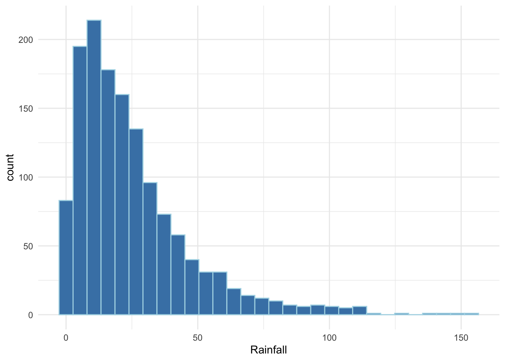
Saving image for media presentation
ggsave("histogram.png")## Saving 7 x 5 in image
## `stat_bin()` using `bins = 30`. Pick better value
## with `binwidth`.ggplot(pakistan, aes(Year, Rainfall, color = Month)) + geom_point(alpha = 0.5) + geom_smooth(se = FALSE)## `geom_smooth()` using method = 'loess' and formula
## = 'y ~ x'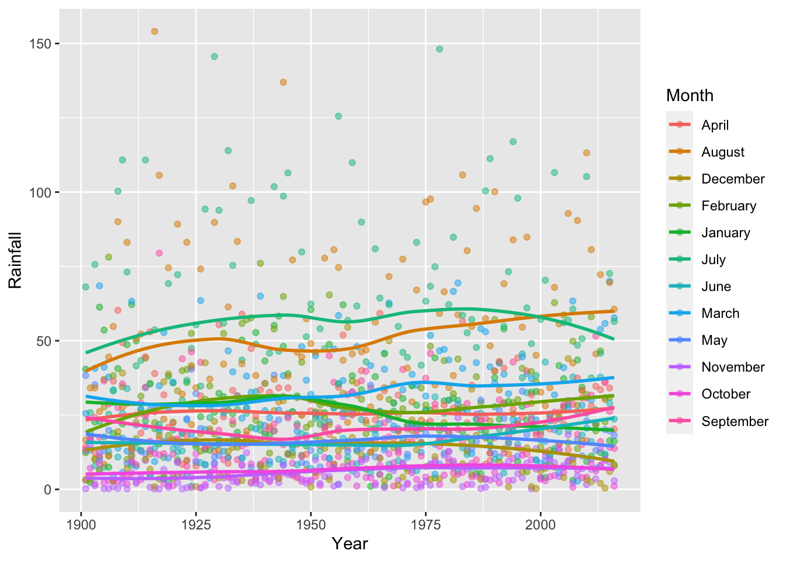
ggplot(pakistan, aes(Year, Rainfall, fill = Month)) + geom_bar(stat = "identity") + scale_fill_discrete(name = "Month", limits = month.name)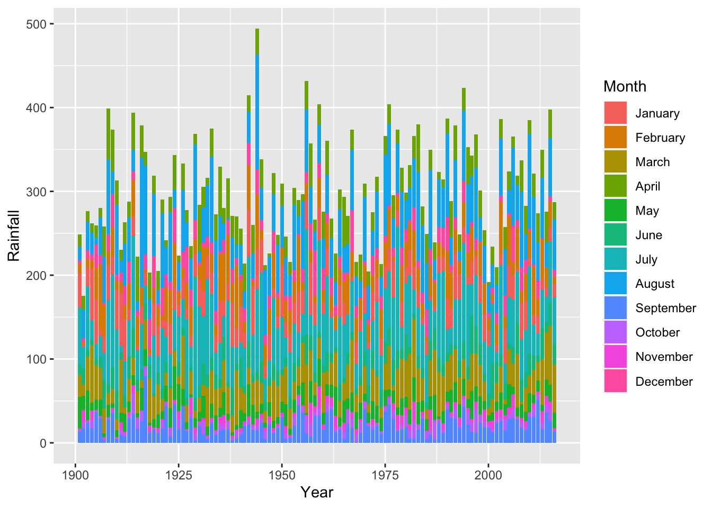
As expected, August and July have higher rainfall due to monsoons
ggplot(rainfall_average, aes(Year, Rainfall, color = Month)) + geom_line(alpha = 0.8) + theme_minimal()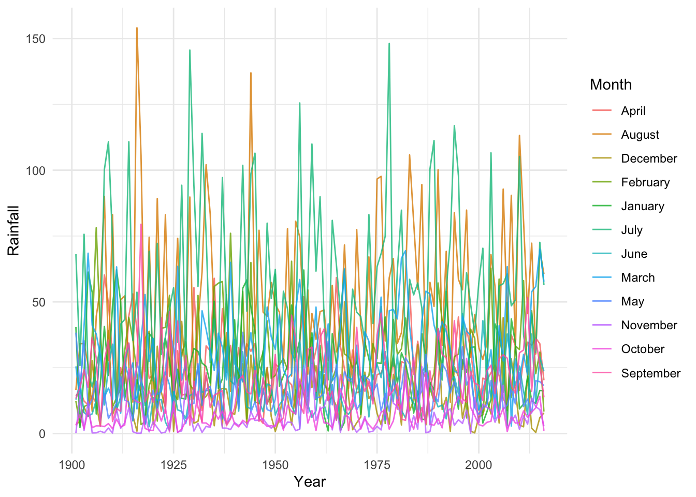
Saving image for media presentation
ggsave("average.png")## Saving 7 x 5 in imageggplot(subset(pakistan, Month %in% c("June","July", "August")), aes(Year, Rainfall, color = Month)) + geom_line() + facet_wrap(~ Month)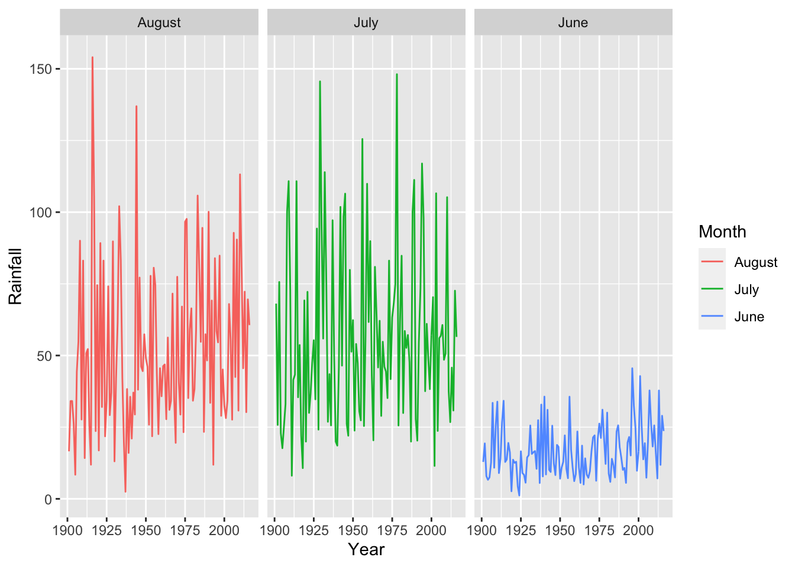
Monsoon in 2010
monsoon <- filter(pakistan, Month == c("July", "August"), Year == 2010)
monsoon## Rainfall Year Month
## 1 105.220 2010 July
## 2 113.186 2010 Augustggplot(subset(pakistan, Month %in% c("June","July", "August")), aes(Year, Rainfall, color = Month)) + geom_line() + facet_wrap(~ Month) + geom_point(data = monsoon, aes(Year, Rainfall), color = "black", size = 2) + theme_minimal()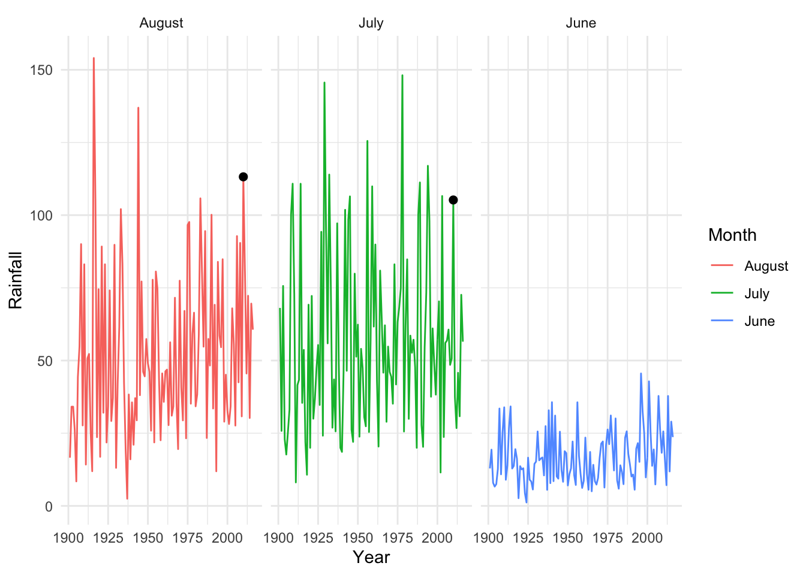
Saving image for media presentation
ggsave("2010monsoon.png")## Saving 7 x 5 in imageggplot(subset(pakistan, Month %in% c("March","April", "May")), aes(Year, Rainfall, color = Month)) + geom_line() + facet_wrap(~ Month)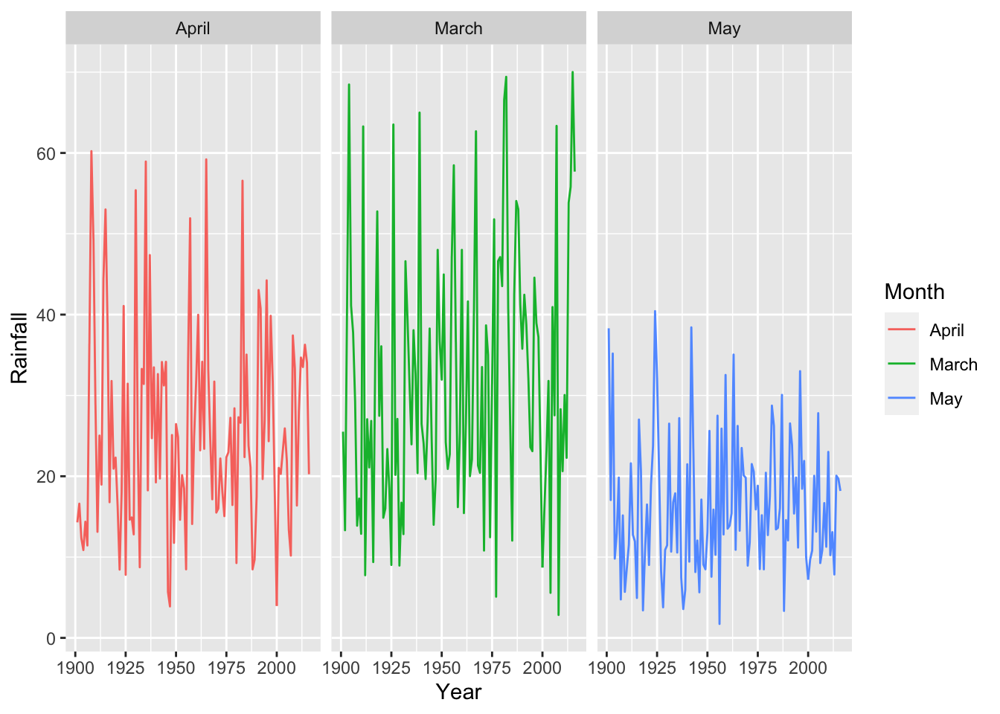
ggplot(subset(pakistan, Month %in% c("September","October", "November")), aes(Year, Rainfall, color = Month)) + geom_line() + facet_wrap(~ Month)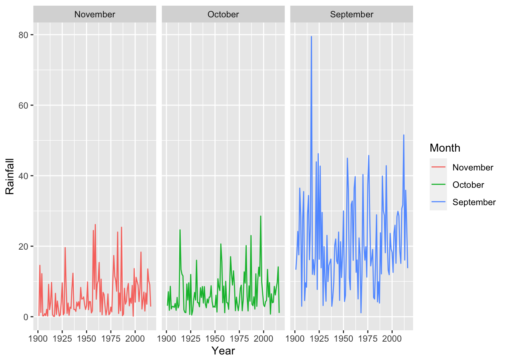
ggplot(subset(pakistan, Month %in% c("December","January", "February")), aes(Year, Rainfall, color = Month)) + geom_line() + facet_wrap(~ Month)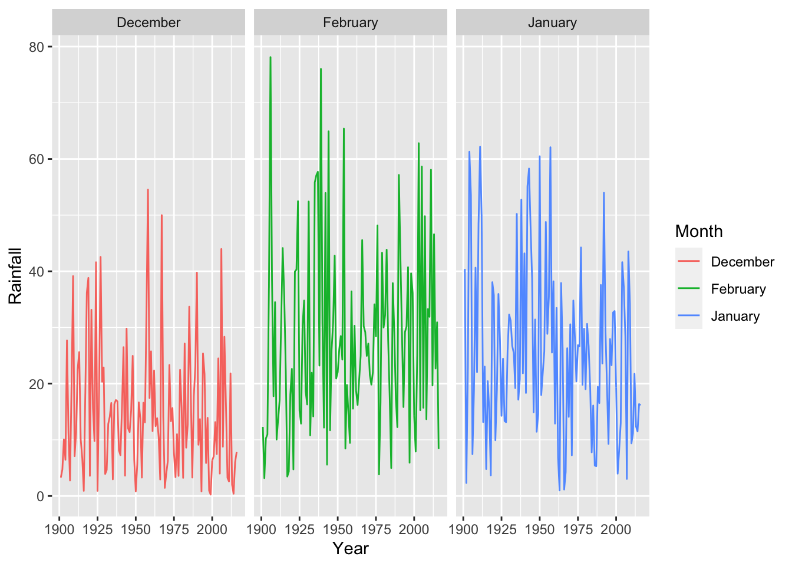
For the sake of brevity, let’s use a linear regression model to predict Rainfall. As seen above, the data is skewed so we can take log of Rainfall, however, implications can come a long with it making the data inaccurate.
pakistan$log_rainfall <- log(pakistan$Rainfall)
head(pakistan)## Rainfall Year Month log_rainfall
## 1 40.4258 1901 January 3.699468
## 2 12.3022 1901 February 2.509778
## 3 25.5119 1901 March 3.239145
## 4 14.2942 1901 April 2.659854
## 5 38.3046 1901 May 3.645570
## 6 12.8813 1901 June 2.555777lm1 <- lm(log_rainfall ~ Year, data = pakistan)
summary(lm1)##
## Call:
## lm(formula = log_rainfall ~ Year, data = pakistan)
##
## Residuals:
## Min 1Q Median 3Q Max
## -4.9273 -0.5422 0.1853 0.7234 2.3584
##
## Coefficients:
## Estimate Std. Error t value Pr(>|t|)
## (Intercept) -2.1750568 1.7010844 -1.279 0.20124
## Year 0.0025334 0.0008684 2.917 0.00359 **
## ---
## Signif. codes: 0 '***' 0.001 '**' 0.01 '*' 0.05 '.' 0.1 ' ' 1
##
## Residual standard error: 1.085 on 1390 degrees of freedom
## Multiple R-squared: 0.006085, Adjusted R-squared: 0.00537
## F-statistic: 8.51 on 1 and 1390 DF, p-value: 0.003589plot(lm1)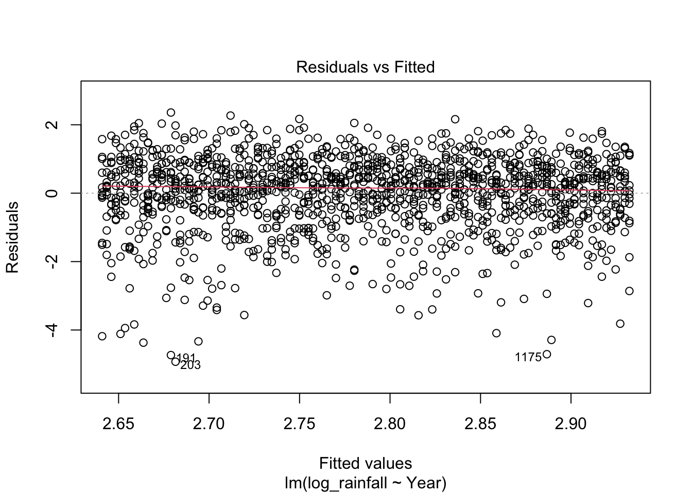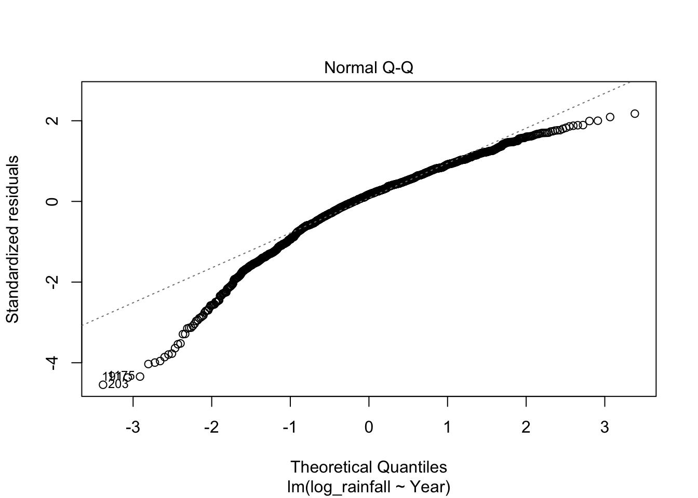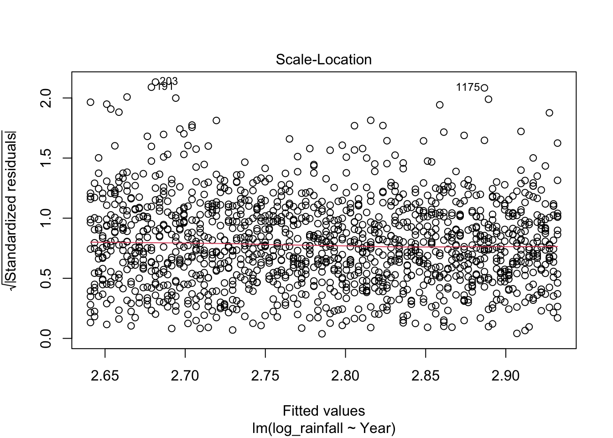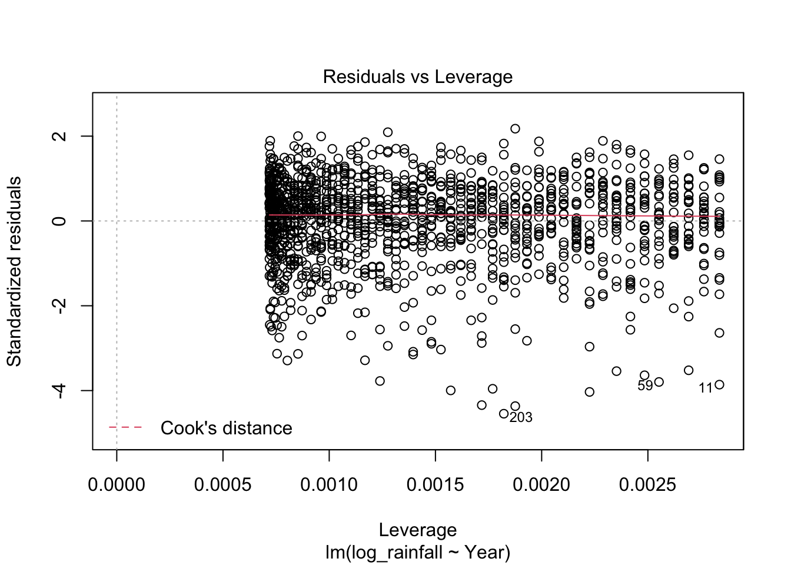
lm2 <- lm(log_rainfall ~ Year + Month, data = pakistan)
summary(lm2)##
## Call:
## lm(formula = log_rainfall ~ Year + Month, data = pakistan)
##
## Residuals:
## Min 1Q Median 3Q Max
## -3.8009 -0.3886 0.0746 0.5090 2.1102
##
## Coefficients:
## Estimate Std. Error t value Pr(>|t|)
## (Intercept) -1.848127 1.212448 -1.524 0.12766
## Year 0.002533 0.000618 4.099 4.38e-05 ***
## MonthAugust 0.662618 0.101376 6.536 8.86e-11 ***
## MonthDecember -0.816166 0.101376 -8.051 1.76e-15 ***
## MonthFebruary 0.022821 0.101376 0.225 0.82193
## MonthJanuary -0.100026 0.101376 -0.987 0.32397
## MonthJuly 0.766003 0.101376 7.556 7.54e-14 ***
## MonthJune -0.457655 0.101376 -4.514 6.89e-06 ***
## MonthMarch 0.203421 0.101376 2.007 0.04499 *
## MonthMay -0.464082 0.101376 -4.578 5.12e-06 ***
## MonthNovember -1.961016 0.101376 -19.344 < 2e-16 ***
## MonthOctober -1.483168 0.101376 -14.630 < 2e-16 ***
## MonthSeptember -0.295909 0.101376 -2.919 0.00357 **
## ---
## Signif. codes: 0 '***' 0.001 '**' 0.01 '*' 0.05 '.' 0.1 ' ' 1
##
## Residual standard error: 0.7721 on 1379 degrees of freedom
## Multiple R-squared: 0.5007, Adjusted R-squared: 0.4963
## F-statistic: 115.2 on 12 and 1379 DF, p-value: < 2.2e-16Saving for media presentation
save(lm2, file = "lm2.Rdata")plot(lm2)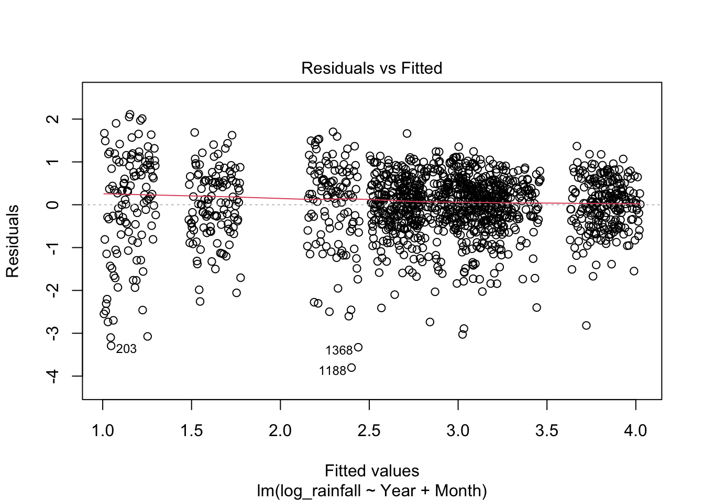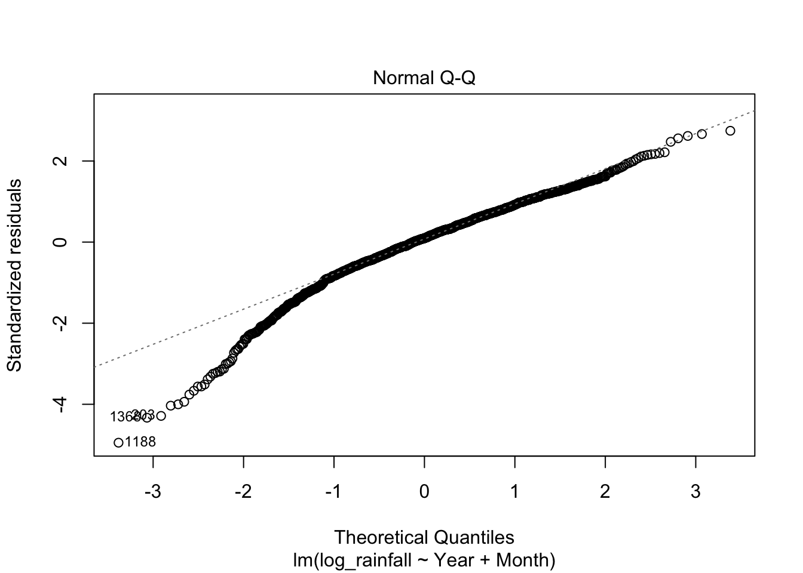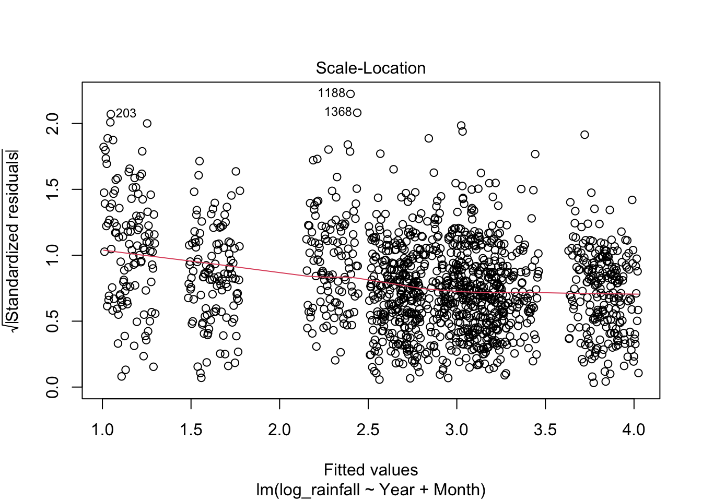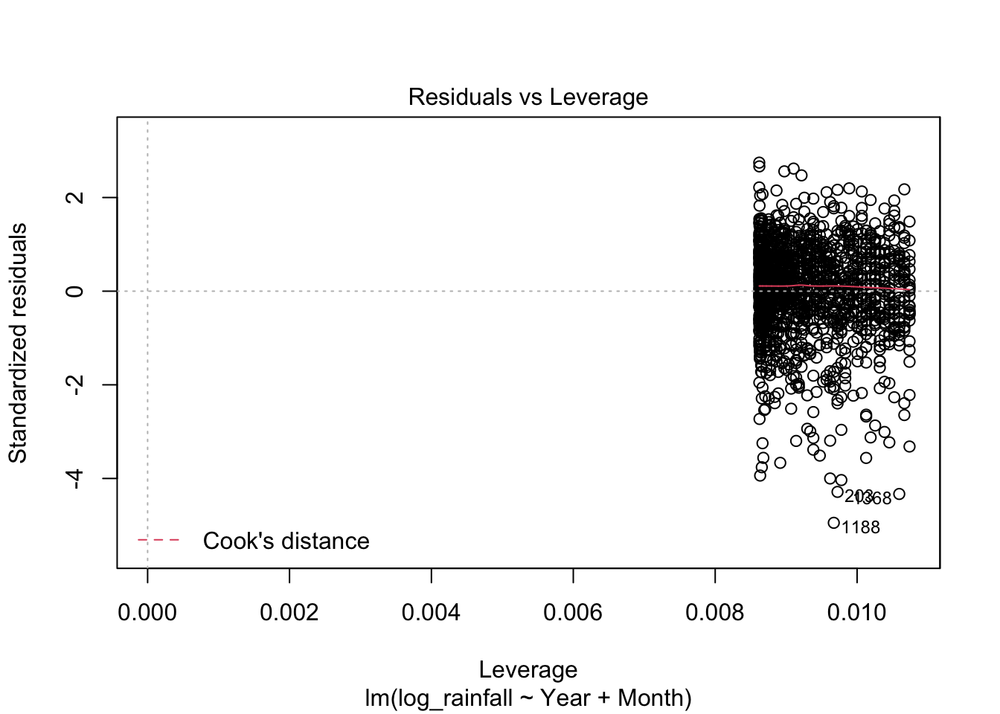
Now lets try predicting Rainfall for year 2017 and Month January
Using model 1 first
head(predict(lm1))## 1 2 3 4 5 6
## 2.64092 2.64092 2.64092 2.64092 2.64092 2.64092logged_prediction <- predict(lm1, data.frame(Year = 2017, Month = "January"))
lm1_prediction <- exp(logged_prediction)
lm1_prediction## 1
## 18.81761Now using model 2
head(predict(lm2))## 1 2 3 4 5 6
## 2.867824 2.990671 3.171271 2.967850 2.503768 2.510194logged_prediction2 <- predict(lm2, data.frame(Year = 2017, Month = "January"))
lm2_prediction <- exp(logged_prediction2)
lm2_prediction## 1
## 23.61064We can take a look at accuracy, but for now this ends a quick example of how we can use data science to help predict rainfall.